Generalisation under distribution mismatch with Deep Within-class Covariance Analysis
In this post, I want to talk about generalisation under distrinbution mismatch. Let's assume we would like to separate the following two class from each other, given this training data:
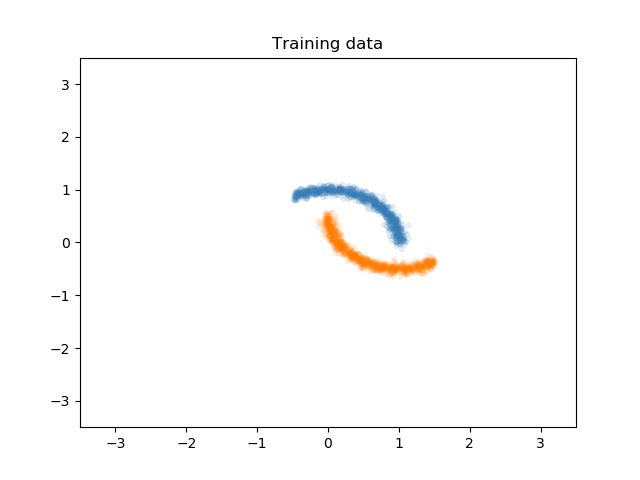Although this training set is given to train our model, we know that the distribution of the test set is going to be slightly shifted from the training set. Let's call the data distribution from the training set the source distribution, and let's name the distribution of the test set, the target distribution. There is a large literature on transfer learning and domain adaptation with various assumptions and constrains about this problem, but let us assume in our toy problem that we do not have access to any target domain data. We are not going to use the target domain for training our model, but I will show you how it looks like:
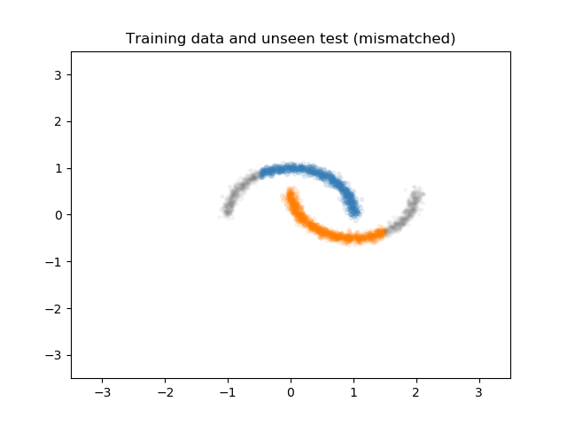Now let's see what happens when we train a simple neural network to separate these two classes from eachother. Here, I show the decision boundary of our network that is train on the training set to separate the two moons:
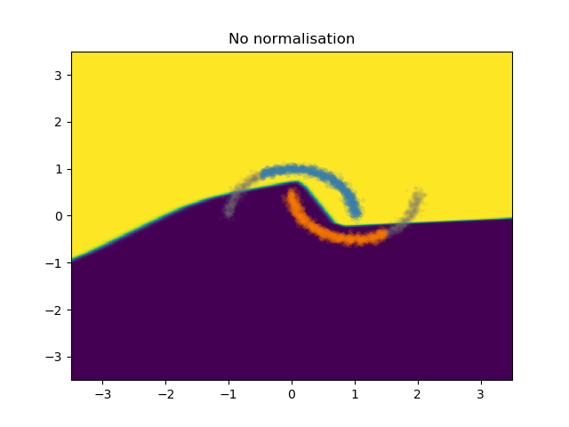As you can see for yourself, although the samples of the two classes from the training set are perfectly separated, the boundary for the continuation of the data in the mismatched condition is not very good. If I would have drawn the boundary myself and correct the boundary of this model with a pen, it would look something like the following:
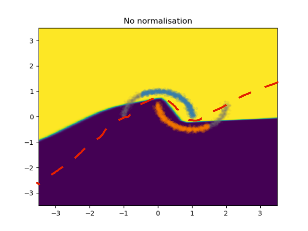Besides taking a pen and fix your model boundaries yourself, there is another way to fix this! In this paper, we showed that although you don't know how the distribution of your test set might shift from the training might shift, there is a way to estimate it in a resonable way. What you need to do is to normalize the representation of the data that your model is using to create the boundary,with an estimate of the covariance of that representation for unseen cases. How, you ask? It turns out that you can actually estimate an unknown covariance (in our case, the covariance of the representation in the test set) by the Within-class Covariance matrix of the training representations. Pretty awesome, right? How does this work? Pretty simple: You just have to compute the covariance of each class during the training set, and then average them and use it as the estimate of the unknown covariance:
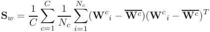where 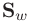 is the within-class covariance matrix, 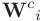 is the representation and 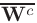 is the mean of the representation in the minibatch batch. C is the number of classes (2 in our case), and 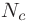 is the number of samples from the class c. You can then use this estimation to normalise your representation on the fly during training, using the Cholesky decomposition as follows:

Not only can we use this normalisation in the forward pass, but also there won't be any issues in the backward pass since the whole normalisation is differentiable, therefore gradients of the computatinal graph used can be computed (at least in pytorch and Theano)! During training, you can use the batch-projection 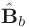, and maintain a running average as 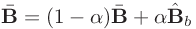 for inference in test time. By applying this normalization on the same neural net model used above, we will get the following boundary, which is much nicer than the previous model:

As you can see, the model boundary is following the data distribution and hence corrects the decision boundary of the model which results in a better generalisation onto the unseen test set that is from a mismatch distribution.